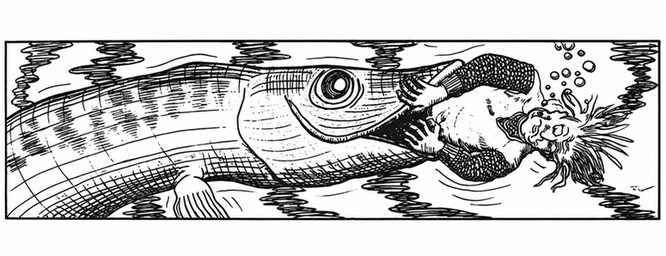

巨型狗鱼 · Pike, Giant

| 项目 | 数据 |
|---|---|
| 出现频率 | 稀有 |
| 出现数量 | 1–8 |
| 护甲等级 | 5 |
| 移动力 | 36 寸 |
| 生命骰 | 4 |
| 在巢穴概率 | 无 |
| 财宝类型 | 无 |
| 攻击次数 | 1 次 |
| 攻击伤害 | 4–16 |
| 特殊攻击 | 以 1–4 结果突袭 |
| 特殊防御 | 无 |
| 魔法抗性 | 标准 |
| 智力 | 非智能 |
| 阵营 | 中立 |
| 体型 | L（长 9–14 尺） |
| 灵能能力 | 无 |
巨型狗鱼生活在深而大的湖泊中，是凶猛的捕食者，饥饿时会攻击附近任何生物。它们视力良好、移动迅速，三分之二的时间能突袭猎物；尼克希常会驯养巨型狗鱼。